LVGL
LVGL(Light and Versatile Graphics Library) là thư viện đồ họa nhúng mã nguồn mở và miễn phí phổ biến nhất để tạo giao diện người dùng đẹp mắt cho mọi MCU, MPU và loại màn hình. Tìm hiểu thêm tại https://lvgl.io.
Hướng dẫn sử dụng SquareLine Studio
SquareLine Studio là trình chỉnh sửa giao diện, người dùng kéo và thả các thành phần đơn giản một cách trực quan để tạo giao diện người dùng đẹp mắt một cách nhanh chóng và dễ dàng cho các ứng dụng nhúng và máy tính để bàn.
Cài đặt ứng dụng SquareLine Studio
Yêu cầu tối thiếu để cài đặt SquareLine Studio:
Intel x64 PC with minimum:
CPU: Bộ xử lý Intel hoặc AMD có hỗ trợ 64-bit, bộ xử lý 1,5 GHz hoặc nhanh hơn
RAM: 4 GB
HDD: 2 GB
GPU: Hỗ trợ DirectX 11 hoặc OpenGL 3.2
Hệ điều hành:
Hệ điều hành: Windows 7 trở lên (64-bit)
Độ phân giải màn hình: 1280 x 800
Cần có kết nối internet để kích hoạt phần mềm
Tiến hành cài đặt:
Bước 1: Tải file cài đặt: truy cập vào Link và tải file cài đặt dành cho Windows
Bước 2: Chạy file SquareLine_Studio_Setup.exe để cài đặt ứng dụng. Làm theo hướng dẫn để hoàn tất quá trình cài đặt
Yêu cầu tối thiếu để cài đặt SquareLine Studio:
Intel x64 PC with minimum:
CPU: Bộ xử lý Intel hoặc AMD có hỗ trợ 64-bit, bộ xử lý 1,5 GHz hoặc nhanh hơn
RAM: 4 GB
HDD: 2 GB
GPU: Hỗ trợ Vulcan hoặc OpenGL 3.2
Hệ điều hành:
Hệ điều hành: Ubuntu 18.04 hoặc mới hơn
Độ phân giải màn hình: 1280 x 800
Cần có internet để kích hoạt phần mềm
Tiến hành cài đặt:
Bước 1: Tải file cài đặt: truy cập vào Link và tải file cài đặt dành cho Linux
Bước 2: Giải nén file vừa tải
Bước 3: Chạy file setup.sh
Mở terminal truy cập vào thư mục có chứa file setup.sh
Chạy các lệnh sau.
chmod +x setup.sh ./setup.sh
Yêu cầu tối thiếu để cài đặt SquareLine Studio:
Intel x64 PC with minimum:
CPU: Intel or AMD processor with 64-bit support, 1.5 GHz or faster processor
RAM: 4 GB
HDD: 2 GB of storage space
GPU: Hỗ trợ Metal hoặc OpenGL 3.2
Hệ điều hành:
Hệ điều hành: High Sierra 10.13 hoặc mới hơn
Độ phân giải màn hình: 1280 x 800
Cần có kết nối internet để kích hoạt phần mềm
Tiến hành cài đặt:
Bước 1: Tải file cài đặt: truy cập vào Link và tải file cài đặt dành cho macOS
Bước 2: Khởi chạy SquareLineStudio, chấp nhận Điều khoản và Điều kiện và bạn đã sẵn sàng sử dụng phần mềm. Nếu bạn có CPU dựa trên ARM (ví dụ Apple M1) thì bạn nên sử dụng Rosetta. Tim hiểu thêm ở đây: https://support.apple.com/en-us/HT211861
Ghi chú
Lưu ý: Nếu xảy ra lỗi thiếu thư viện thì các bạn cài thêm cho máy (Bổ sung một số lỗi có thể gặp sau).
Sử dụng ứng dụng SquareLine Studio
Mở ứng dụng SquareLine Studio
Đăng nhập
Nếu bạn chỉ muốn dùng thử chương trình, bạn không cần phải đăng ký hoặc đăng nhập. Trong trường hợp bạn chưa sử dụng SquareLine Studio trên máy tính, bạn sẽ tự động nhận được phiên bản dùng thử 30 ngày.
Nếu bạn muốn sử dụng lâu dài hãy mua giấy phép (license) và đăng nhập. Sau đó, bạn có thể tạo một dự án mới, tải dự án đã lưu của mình hoặc làm việc với một ví dụ có sẵn trong SquareLine Studio.
Mở dự án đã lưu hoặc tải về trước đó
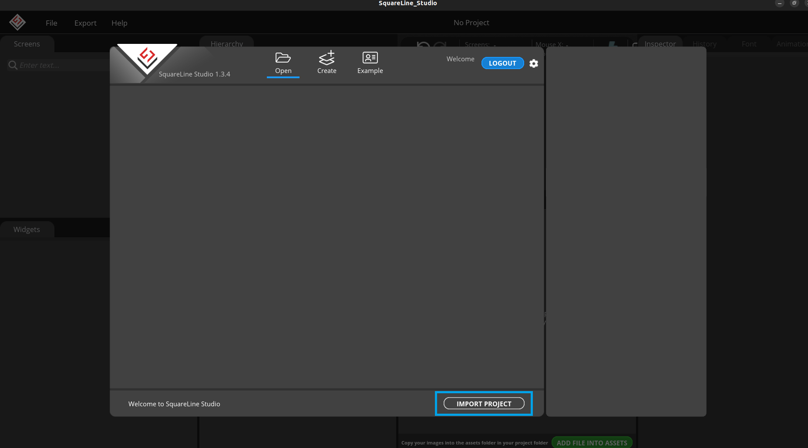Nhấn Improt Project để tải một dự án đã được lưu trên máy tính
Tạo dự án mới

Board Description - Mô tả board được chọn.
Project Description - Mô tả dự án của bạn.
Project Settings - Tạo tên, đường dẫn và độ phân giải của dự án của bạn.
Create Project - Sau khi thêm tất cả các tham số cần thiết, bạn có thể tạo dự án của mình.
Mở dự án mẫu của SquareLine Studio cung cấp
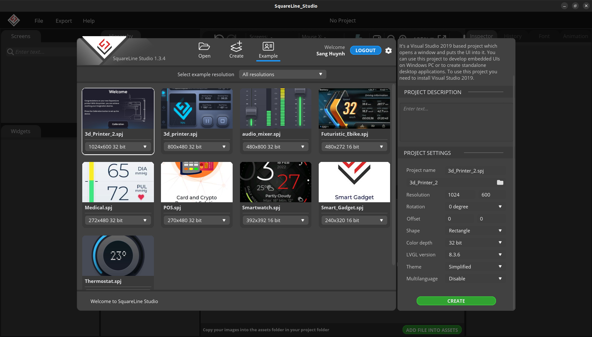Để sử dụng một dự án mẫu, chỉ cần chọn một dự án thích hợp từ danh sách và tải nó bằng cách nhấp CREATE
Xuất dự án giao diện sau khi thiết kế trên SquareLine Studio
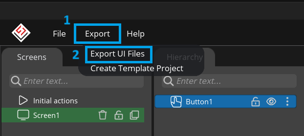Nhấn Export -> Export UI Files, sau đó chọn thư mục sẽ chứa dự án giao diện đó.
Thêm chương trình giao diện vào chương trình chính của dự án
Tạo một thư mục
guitrong dự án, đồng cấp với thư mụcsourceđể chứa các file giao diện vừa thiết kế trên SquareLine Studio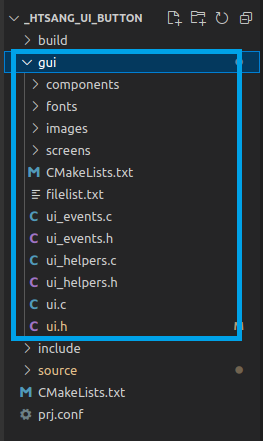Thay đổi đường dẫn file thư viện
lvgl.htrong fileui.h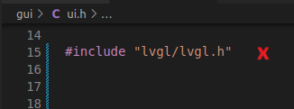 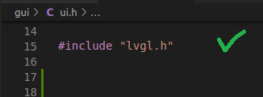Thêm thư viện
ui.hvào trong filemain.c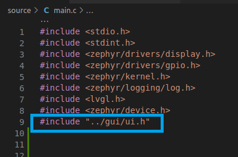Chỉnh sửa file
CMakeLists.txtcùng cấp với foldersrcnhư sau:cmake_minimum_required(VERSION 3.20.0) find_package(Zephyr REQUIRED HINTS $ENV{ZEPHYR_BASE}) project(_htsang_ui_button) FILE(GLOB app_sources source/*.c) target_sources(app PRIVATE ${app_sources}) include_directories(gui) target_sources(app PRIVATE gui/ui_helpers.c) target_sources(app PRIVATE gui/ui.c) target_sources(app PRIVATE gui/components/ui_comp_hook.c) target_sources(app PRIVATE gui/screens/ui_Screen1.c)
Thêm cấu hình trong file
prj.confcùng cấp với foldersrcnhư sau:# LVGL CONFIG_LVGL=y CONFIG_LV_Z_MEM_POOL_SIZE=8192 # Display CONFIG_DISPLAY=y CONFIG_INPUT=y
Hello World với SquareLine Studio
Ghi chú
Hướng dẫn này được chạy trên board STM32F746G_Disco
Thiết kế giao diện trên SquareLine Studio
Tạo dự án mới
Tạo dự án mới phần cứng STxxxx, kích thước màn hình là 480x272 và chế độ màu 16bits
Thêm nút nhấn (button):
Nhấn đúp vào biểu tượng nút nhấn (Button) trên bảng Widgets. Khi đó, màn hình giao diện sẽ hiển thị ra một nút nhấn có tên là Button1 kích thước mặc định rộng 100px và dài 50px tại vị trí trung tâm màn hình (trung tâm của thành phần mẹ).
Thay đổi thuộc tính cho nút nhấn HelloButton1:
Đổi tên, kích thước...
Thiết lập sự kiện cho nút nhấn:
Bước 1: Ở mục Event, nhấn vào nút ADD EVENT
Bước 2: Chọn hành động khi sự kiện kích hoạt. Ở đây chọn hoạt động MODIFY STATE (biến đổi trạng thái). Sau đó nhấn ADD
Bước 3: Thay đổi tên cho sự kiện, chọn hành động kích hoạt sự kiện. Chọn đối tượng (HelloButton), trạng thái (CHECKED) và kiểu chuyển trạng thái (TOGGLE) cho hoạt động biến đổi trạng thái
Thiết kế nút nhấn khi ở trạng thái CHECKED:
Chuyển trạng thái nút nhấn sang CHECKED
Thiết lập thuộc tính cho trạng thái CHECKED: Ở đây chỉ chỉnh nền thành màu đỏ
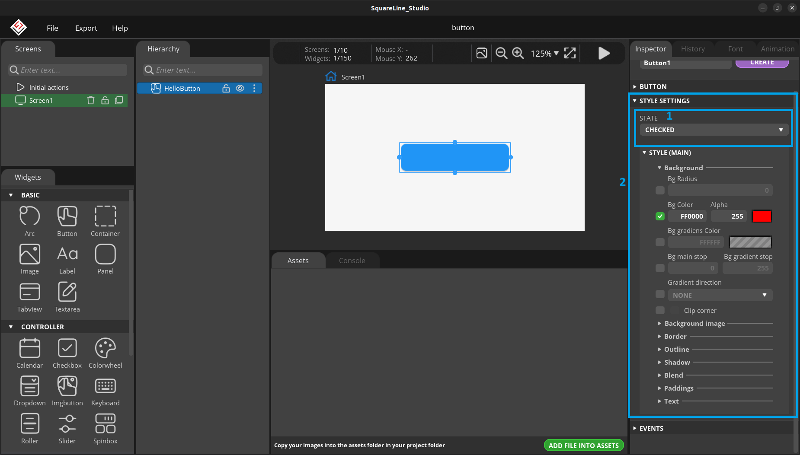Tạo nhãn dán cho nút nhấn (Label):
Nhấn đúp vào biểu tượng nhãn dán (Label) trên bảng Widgets. Khi đó, một nhãn dán tên Label1 sẽ được tạo ra với nội dung text Sau đó, kéo Label1 thả vào HelloButton để thay đổi cấp cho Label1 (khi đó Lable1 sẽ là con của HelloButton)
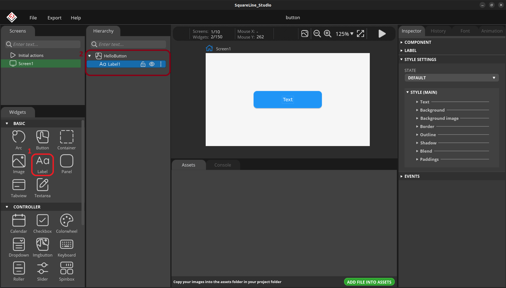Thay đổi thuộc tính cho nhãn dán HelloButton1:
Chỉnh sửa nội dung nhãn dán thành HELLO WORLD
Chạy mô phỏng giao diện:

Xuất bản thiết kế giao diện:
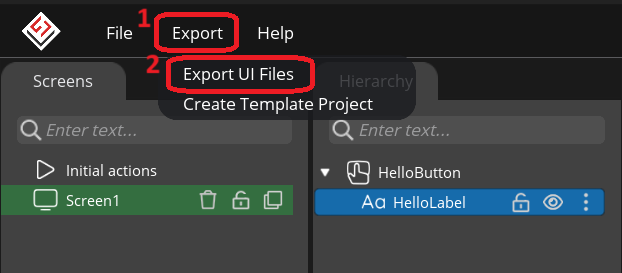
Cấu trúc chương trình (Cây thư mục)
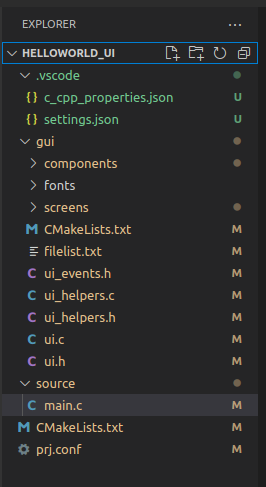File main.c
#include <stdio.h> #include <stdint.h> #include <zephyr/drivers/display.h> #include <zephyr/kernel.h> #include <zephyr/logging/log.h> #include <lvgl.h> #include <zephyr/device.h> #include "../gui/ui.h" LOG_MODULE_REGISTER(app); int main(void) { const struct device *display_dev; display_dev = DEVICE_DT_GET(DT_CHOSEN(zephyr_display)); if (!device_is_ready(display_dev)) { return 0; } ui_init(); lv_task_handler(); display_blanking_off(display_dev); while (1) { k_msleep(lv_task_handler()); } return 0; }
File prj.conf
# Main config CONFIG_MAIN_STACK_SIZE=2048 CONFIG_LOG=y # LVGL CONFIG_LVGL=y CONFIG_LV_Z_MEM_POOL_SIZE=8192 # Display CONFIG_DISPLAY=y CONFIG_INPUT=y # Power management CONFIG_PM=y # Build CONFIG_SIZE_OPTIMIZATIONS=y CONFIG_ARM_MPU=n
File CMakeList.txt
cmake_minimum_required(VERSION 3.20.0) find_package(Zephyr REQUIRED HINTS $ENV{ZEPHYR_BASE}) project(HELLOWORLD_UI) FILE(GLOB app_sources source/*.c) target_sources(app PRIVATE ${app_sources}) include_directories(gui) target_sources(app PRIVATE gui/ui_helpers.c) target_sources(app PRIVATE gui/ui.c) target_sources(app PRIVATE gui/components/ui_comp_hook.c) target_sources(app PRIVATE gui/screens/ui_Screen1.c)
Kết quả chạy trên STM32F746 Discovery Kit
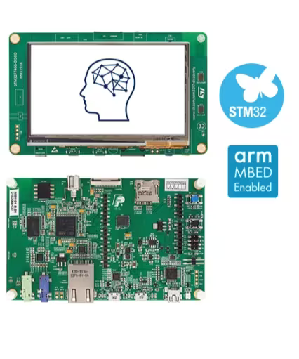
Kích hoạt môi trường ảo cho zephyr:
source ~/zephyrproject/.venv/bin/activate
Di chuyển địa chỉ terminal đến folder của dự án và tiến hành build chương trình:
west build -p always -b stm32f746g_disco
Sau khi build xong, tiến hành fash vào board:
west flash
Kết quả thực tế: